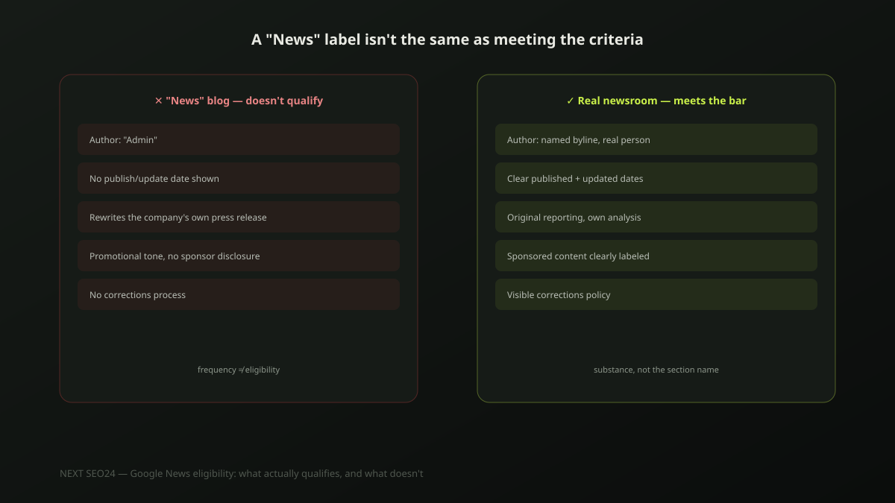

Google News eligibility: what actually qualifies, and what doesn't
Renaming a blog section "News" doesn't make it eligible for Google News — that's the single most common misconception we see from business owners asking about this. Here's what the actual criteria are, what quietly disqualifies a site, and an honest answer to the question most businesses should ask first: do you even need this?
What Google News actually is — and who actually needs it
Google News is a separate index of journalistic content, evaluated against editorial content policies distinct from standard web search ranking. It matters for publishers producing genuine reporting — original, timely, fact-checked coverage — not for the average business blog, product update page, or press-release repository. If your content is company announcements, service updates or marketing content, Google News inclusion isn't the right goal; ranking well in standard Google Search is.
The real eligibility criteria
- Original reporting. Content must add genuine information, analysis or perspective — not simply republish or lightly rewrite a press release or another outlet's coverage.
- Clear authorship. Real bylines with named authors, not "Admin" or an unnamed company account, on content that reads as journalism.
- Transparent dates. Clear publication and update dates on every article — a basic trust signal Google checks explicitly.
- An editorial policy. A visible corrections process and clear separation between editorial and advertising content — not a legal formality, an actual functioning distinction.
- Site-wide trust signals. Clear "About" information, contact details, and ownership transparency — the same E-E-A-T fundamentals that matter for standard search, applied more strictly.
Publishing frequently is not the same as being eligible
A company that posts three "news" updates a week — a new hire, a product tweak, an award submission — is publishing frequently, not producing journalism. Google's evaluation looks at whether content genuinely informs an independent audience about events, not at posting cadence. Frequency without substance doesn't move a site closer to eligibility; it just produces more content that doesn't qualify.
What actually disqualifies a site
The most common disqualifier by far is undisclosed sponsored or promotional content presented as independent reporting — a company blog covering its own product launch in a tone that reads as objective news, without disclosure that it's the company's own announcement. Other common issues: no visible authorship, no dates, content that's substantially duplicated from press releases or other outlets, and a lack of any real editorial or corrections process.
A working NewsArticle example
For sites that do produce genuine news content, NewsArticle structured data helps Google understand the content correctly — though it doesn't grant eligibility by itself:
{
"@context": "https://schema.org",
"@type": "NewsArticle",
"headline": "Malaysia's e-commerce sector grows 18% in Q2 2026",
"author": { "@type": "Person", "name": "Author Name" },
"publisher": { "@type": "Organization", "name": "Publisher Name" },
"datePublished": "2026-08-05T09:00:00+08:00",
"dateModified": "2026-08-05T09:00:00+08:00"
}This schema is only appropriate for content that's genuinely news — applying it to a marketing post doesn't change what Google's editorial evaluation actually sees.
Should a typical SME even bother?
Honestly, usually not. For most businesses in Malaysia, Korea, Japan or Southeast Asia, the actual goal should be ranking well in standard Google Search and earning legitimate press coverage from outlets that are already eligible — a genuine mention in a real news outlet does more for both credibility and SEO than trying to get a company blog classified as news. Google News eligibility is worth pursuing specifically for businesses with a genuine newsroom function: PR agencies, industry publications, or companies with a dedicated, independently-run editorial team.
Frequently asked questions
Do I need to apply to Google News to be included?
No formal application or approval process exists anymore for standard inclusion — Google crawls and evaluates content against its editorial content policies automatically, the same way it indexes any other page. What matters is whether your content actually meets the criteria (original reporting, clear authorship, editorial standards), not submitting a request.
Does having a "News" or "Blog" section on my site automatically qualify it for Google News?
No. Labeling a section "News" doesn't make its content journalism. Google evaluates the actual content against its policies — original reporting, clear bylines, dates, and a genuine editorial process — regardless of what the page or menu item is called. A press-release repository or a marketing blog rebranded as "News" won't qualify just from the label.
What's the single biggest reason sites get rejected or excluded from Google News?
Undisclosed sponsored or promotional content presented as independent reporting. Google's policies are explicit that paid or promotional content must be clearly labeled as such. A company blog publishing what reads as objective news coverage of its own products, without disclosure, is one of the most common disqualifiers we see.
Not sure whether Google News fits your content strategy?
Tell us what you're publishing — we'll give you an honest read on whether Google News is worth pursuing, or whether standard SEO is the better investment.
Chat on WhatsApp →